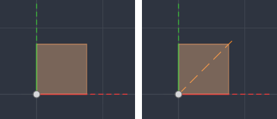
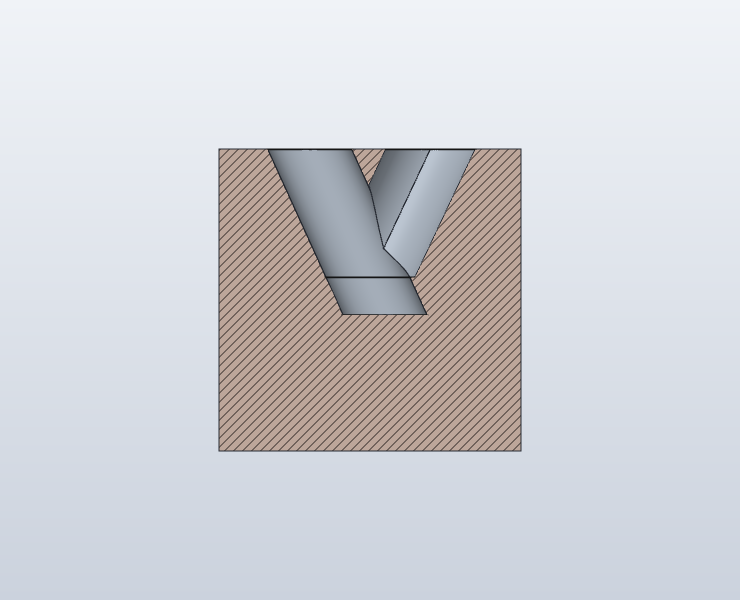

SolidCraft viewport and sketch bridge
The geometry service owns the rational volume maps. SolidCraft owns the display of a design. The bridge passes construction sketch entities for a planar layout and a STEP boundary representation for a solid. SolidCraft reads the boundary and tessellates it using the same display path as any other CAD body in the application. Changing the viewport quality requires no change to the volume maps. The STEP file carries the boundary; retain the model JSON for interior charts, exact weights and analysis.
Compact sketch ribbon
Launch the separate compact profile to open the sharp FieldCraft bracket:
python3 scripts/solidcraft_compact_desktop.py /path/to/solidcraft-trivariate-0.5.0.zip
Its Sketch tab pins new sketch, line, two-point rectangle, coincidence, horizontal/vertical, fit-point spline, control-point spline, finish and cancel. The same ribbon adds extrude, drill, boolean, chamfer and fillet. Standard modeling tabs are hidden. SolidCraft still provides its sketch section menus and global search. On SolidCraft 0.48.1 the Sketch-tab plugin buttons use the host’s plug glyph; the entry dialogs use the package’s operation icons.
Extrude takes the latest authored sketch by default. On an attached planar face choose Add material or Remove material, then enter a positive depth in millimetres. The attachment identifies the body; its outward normal sets the sign. New body creates a separate solid. Linked face outlines and construction geometry are excluded from the authored profile.
The native constructor accepts a single regular loop with a certified curved partition. A rectangular stock can carry the complete addition or pocket as trivariate charts. For another supported face, including the FieldCraft bracket, the plugin imports the boundary of the trivariate extrusion tool and SolidCraft combines it with the owning body. The companion output name distinguishes a complete result from a tool. Each operation records the contour snapshot at execution time; editing the sketch later requires rebuilding the extrusion.
Drill cuts a centered through-bore. On the reference box enter a radius. On a rectangular sketch extrusion also identify the original sketch and height.
Boolean accepts the reference box and crossing cylinder as two viewport picks. The chosen operation updates the stock feature and suppresses the tool.
Fillet and Chamfer accept viewport picks on a single solid. Finish the sketch and select an edge, several edges, or a face whose boundary should be treated. Adjacent coplanar patches are grouped to exclude internal partition seams. Follow tangent edges is enabled by default, so a hole rim may continue across a face boundary. Clear the option to use only the selected edges. If the selected full-span outside edge meets a pocket on axis-aligned stock, the Rust library can construct a swept corner cutter. Its profile uses a quarter-circle for a fillet and a straight line at equal setbacks on the two support planes for a chamfer. The plugin passes that profile and the extrusion frame to SolidCraft, which cuts the selected B-rep. Run the operation from the sharp parent when changing the dimension. Enter the radius or distance in millimetres and run the command. The edited solid can already contain extrusions and cuts. SolidCraft creates a B-rep feature in the document timeline. The native fixed-partition bore-rim demonstration remains available through Build Recipe.
Sketch and extrusion
For a closed polygonal sketch on the origin XY plane, the companion enumerates the exact edges with two incident planar cells. A separate native sketch holds one construction line per shared edge. The descriptor keeps its rational coordinates, the source feature and the source timeline. Only the host display coordinates go through a floating-point conversion. A rectangle can give zero interior lines. The L profile from the bracket history gives one diagonal from (0, 0) to (8, 8) mm, two cells and, at 40 mm height, 32,640 mm³. This is the layout before the bracket’s later fillet and holes.
To create an ordinary SolidCraft design with the overlay initially hidden, run the following from the repository root:
cargo build --release --locked
python3 scripts/solidcraft_preview_design.py \
tests/references/solidcraft_sketch_bracket.timeline.json 1 build/bracket.sc
Open the design and toggle SCT Partition 1 in the SolidCraft browser. The preview can also be generated when the timeline contains only the sketch. The preview accepts integral polygon coordinates in the planner’s ±4096 mm range and coincident, horizontal and vertical line constraints. The extrusion path accepts a positive new-body extrusion of 1 through 64 mm with the supported profile selection. It applies the same planar planner through the actual thickness.


Identical crops of the SolidCraft desktop. The partition is hidden on the left. On the right the dashed construction line joins the origin to the reentrant corner. The solid and source profile are hidden in both captures to isolate the overlay.
For a captured two-feature timeline, these commands build the exact result for inspection in either SolidCraft or FieldCraft:
target/release/solidcraft-trivariate sketch-preview timeline.json 1 partition.json
target/release/solidcraft-trivariate extrude-sketch timeline.json model.json
target/release/solidcraft-trivariate export-step model.json result.step
SolidCraft exposes sketch visibility and shaded body display separately. The stock shaded setting suppresses the body’s edge overlay. Switching display styles can expose edges between adjacent STEP boundary faces. The volume partition remains recorded in the model JSON. FieldCraft’s stable 0.8.1 headless reader refused the STEP; its design reader accepts format 57 and SolidCraft 0.48.1 writes format 66. FieldCraft nightly 0.8.1-nightly.20261124.89.1 opened the trivariate box-minus-cylinder STEP and rendered it through its own viewport. The two-client test and original screenshots use the same STEP bytes in both clients. FieldCraft’s snapshot includes boundary-face edges. The SolidCraft shaded display setting applies only in SolidCraft.
Intersecting oblique pockets
The SolidCraft reference starts from a 40 mm cube with two disjoint openings on its top face. Tool A has a periodic cubic control spline. Tool B has four weighted quadratic arcs with distinct tangent directions at their joins. Each pocket is a loft between a profile and its translated copy. The two translation vectors are (10, 0, −22) and (−8, 0, −17) mm. Both tools end inside the cube and their volumes intersect below the top surface.
python3 scripts/check_solidcraft_oblique_cube.py
solidcraft build/solidcraft-oblique-reference/both.sc


SolidCraft section at y = 20 mm. The hatched material separates the mouths and remains below both floors. The two swept voids communicate at depth.
The script rebuilds both single cuts and the combined cut as independent SolidCraft documents. It reopens them, checks their closed shells, and tests seven material locations in each. Inclusion–exclusion of their measured volumes gives a tool overlap of 440.91218 mm³ and a remaining volume of 60,497.17099 mm³. The B-rep reference uses the host’s modeling kernel. Its volume and classifications qualify the reference geometry; qualification of trivariate charts requires a separate construction and determinant audit.
A separate native trivariate fixture, oblique_blind_pockets_v1, uses a
10 mm cube, two interior footprints, and independent shear slopes +1/5 and
−1/10 in y per millimetre of depth. The floor depths are 7 and 5 mm.
The first profile has a true C¹ quadratic span joint with unequal second
derivatives. The other profile is rectangular. Both closed profiles have
corners. The openings overlap at the surface in this fixture. The planar
wall envelopes change order at an interior depth that varies with x.
The construction has 64 whole tensor-product charts and 122 shared faces. Their Bernstein certificates bound the Jacobian determinant from below by 0.29583 mm³. The source-profile inequalities agree with the cell coverage on 616 off-boundary probes. SolidCraft opens the exported STEP as one closed solid with 140 boundary faces and volume 871.43658667 mm³.
target/release/solidcraft-trivariate build tests/references/oblique_blind_pockets.recipe.json pockets.json
target/release/solidcraft-trivariate export-step pockets.json pockets.step
solidcraft pockets.step
The qualified constructor checks the complete fixed recipe. Smooth periodic profiles with disjoint openings as in the 40 mm reference require an extension of this arrangement.
Native rendering checks
python3 scripts/check_solidcraft_native_render.py --help
The check imports exact boundaries, calls the host’s model.mesh and takes
snapshots with the stock renderer. The number of display triangles depends on
display settings. Mechanical elements and rational volume spans are counted
separately. The fixed-partition FieldCraft bore chamfer and fillet use their
native boundary exports. The fillet has a singular contact rail; a successful
display does not establish regularity there.